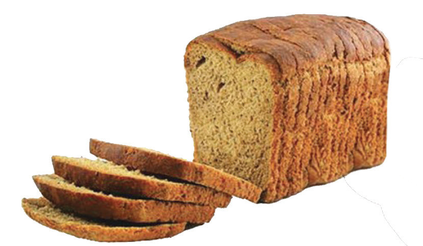
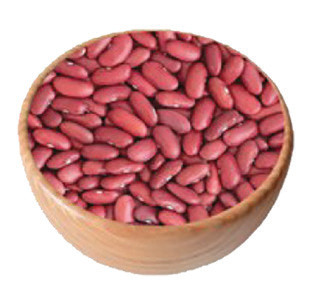

- (vi) Regulating body temperature;
- (vii) Quenching thirst; and
- (viii) Acting as a lubricant in joints and membranes.
Dietary fibre or roughage
Dietary fibre or roughage is a part of food that is not digested in the body. It is found in plant foods. Good sources of dietary fibre include unrefined cereals such as wheat, maize and oats. It is also found in the cell walls of fruits such as apples, plums, and in pears and vegetables, especially leafy vegetables like celery, amaranths and cabbage. Nuts, oil seeds and pulses such as peas, beans and lentils also contain dietary fibre. The following points show the importance of dietary fibre in the body:
-
(i)
Dietary fibre prevents constipation. Insoluble fibre tends to speed up the passage of foods through the gastro intestinal tract and add bulk to the stool reducing constipation and lowers the risk of colon cancer.
- (ii) It lowers cholesterol and blood glucose levels, thus helping to prevent the risk of diseases such as diabetes and heart diseases.
- (iii) It speeds up the passage of food through the digestive tract, hence increasing the faecal bulk.
-
(iv)
It regulates body weight. The consumption of foods that contain high amounts of dietary fibre, such as fruits and vegetables, regulates body weight since they have few calories.
Figure 2.2 shows foods rich in dietary fibre.


Figure 2.2: Foods rich in dietary fibre